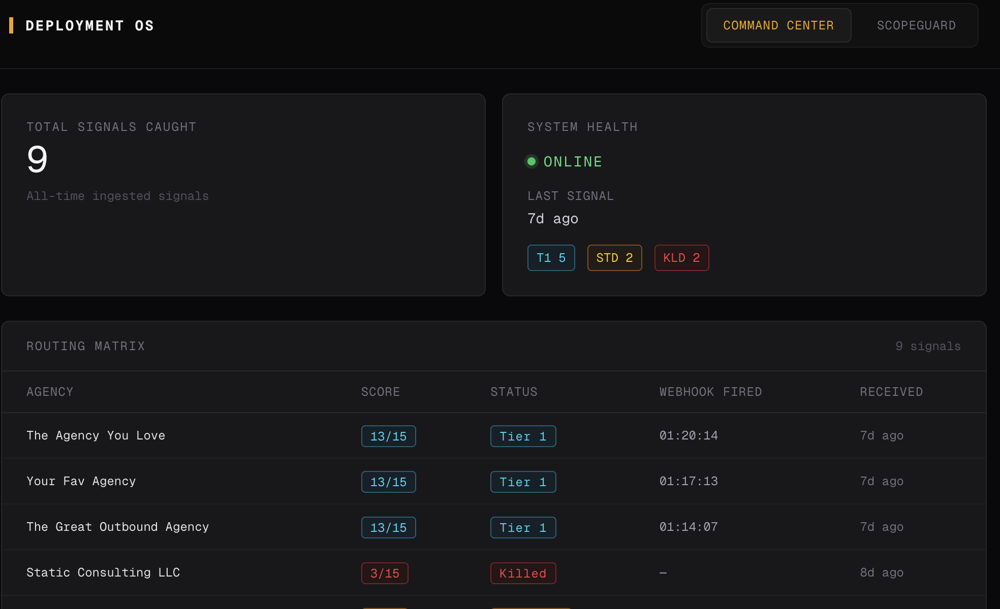
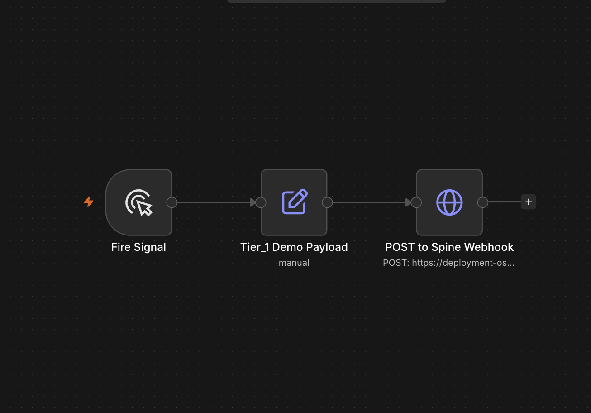
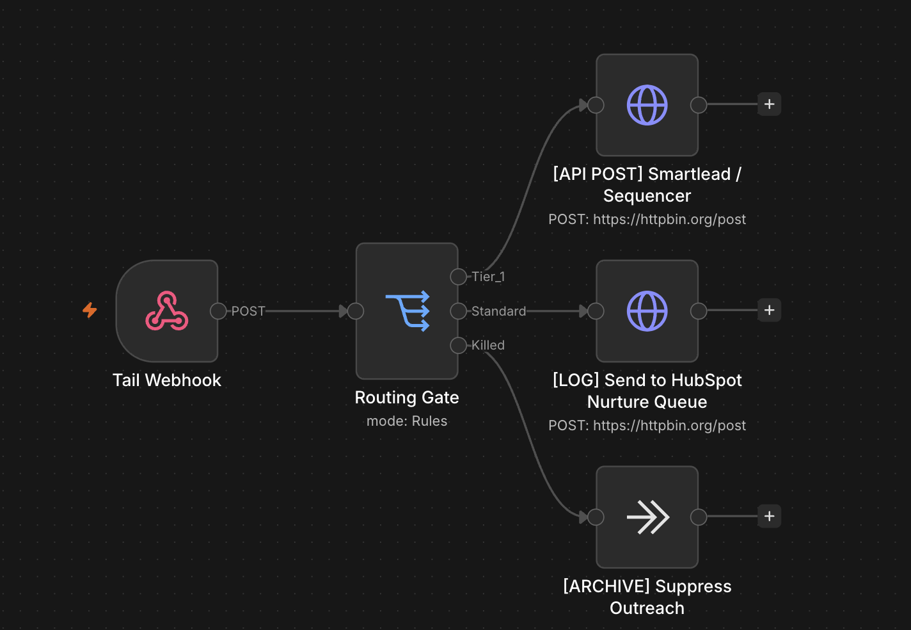

Live System
Deployment OS
Most outbound teams live or die on signal-to-action speed. A company expands a team. A hiring signal fires. The window to act is short.
Most teams catch these signals manually in a spreadsheet, days late. By the time a rep notices and routes it, the moment has cooled. The hard problem is not catching one signal. It is building infrastructure that catches every signal, scores it consistently, and routes it automatically. Attention only goes where it matters. Nothing slips because a rep was busy.
Deployment OS is a live signal-routing platform. It runs on a head, spine, and tail architecture.
- Head (Ingestion): A configurable source that detects signals and fires them into the system. The demo uses a manual trigger. Production runs on an automated poller.
- Spine (The Brain): A custom Next.js and Supabase service. It receives each signal via an authenticated webhook, scores it on a weighted model, and writes it to a database with a real-time dashboard.
- Tail (Routing): The system routes automatically based on tier. Tier 1 fires to the sequencer. Standard goes to a nurture queue. Killed is archived.
The architecture is tool-agnostic by design. The final POST can point at Smartlead, HubSpot, or any endpoint. Swap the target. The logic remains unchanged.



Signal in. Scored on a weighted model. Tiered. Routed by tier. Action fired.
A real-time dashboard shows every signal as it lands. The system is deterministic and auditable. It is built so the team only touches the deals worth touching. I built this greenfield to live cloud infrastructure in a single session. Speed is not the point. The point is that it is real, deployed, and runs end to end.
What this is built to move:
- Signal-to-action latency: Measured in minutes, not days.
- Tier accuracy: Tracking whether Tier 1 accounts convert at meaningfully higher rates than Standard, to validate the scoring model.
- Coverage: Percentage of relevant signals caught versus missed.
- Analyst hours saved: Manual signal triage removed from the team's week.
Want a signal-routing system for your pipeline?
Let's talk →